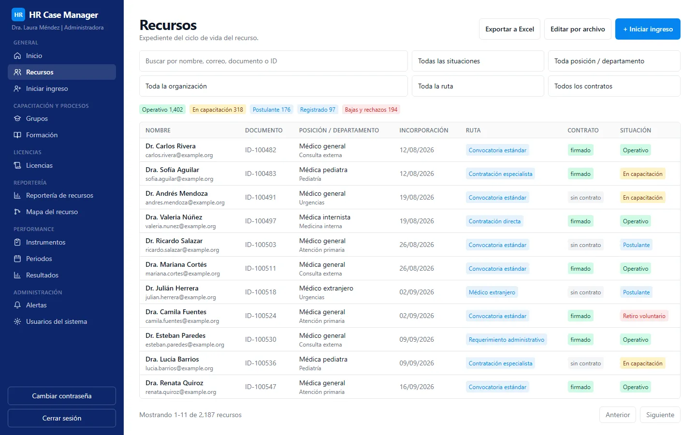
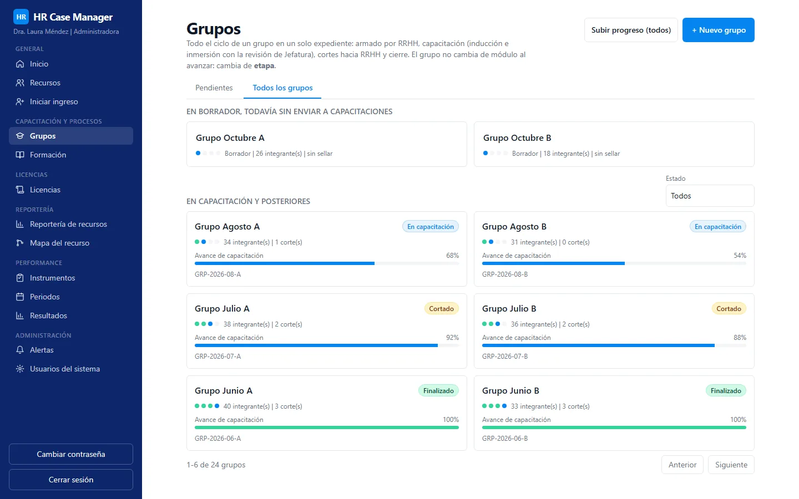
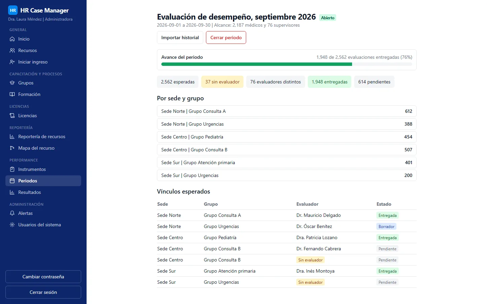

HR case management
Web system that manages the full lifecycle of a medical workforce at a national public telemedicine service: hiring routes, onboarding and training cohorts, licenses, alerts and performance evaluations, in one place with role-based access.
- 2,562expected evaluations, as of September 2026
- 2,187physicians in scope
- 76supervisors
Pilot with users. Figures as reported in 2026. See the screens
Problem
Physician management ran across spreadsheets, forms and email. Each area kept its own copy of the truth: hiring status in one place, training progress in another, licenses in a third, and evaluations in an online form plus a spreadsheet.
The consequences were duplicated criteria between the form and the sheet, supervisors typing by hand whom they were evaluating, information that stayed outside any system, and no single view of what is known about a person or who is responsible for updating each piece.
Solution
A modular monolith with clear boundaries between areas of responsibility (hiring lifecycle, training, licenses, access, notifications, audit, performance), so each area's rules live in one place and communicate through events.
- Hiring lifecycle: several hiring routes, each with its own steps, tracked per person with a full history.
- Training: cohorts with stages, attendance, activities and scores, with hand-offs between areas and a generated flow document that cannot drift from the code (the flow documentation is generated from the rule tables, and a test compares them).
- Licenses: requests, attachments and history.
- Alerts: in-app center plus email through an outbox, routed to a central mailbox and the responsible area.
- Performance module (latest delivery): a map of everything the system holds about a person and which area updates each attribute, applied as real permissions; configurable evaluation instruments with published versions; evaluation periods; expected evaluator derived from the existing supervision structure; capture with drafts and frozen submissions; results with visibility controlled per instrument; and import of the historical evaluation data.
- Sensitive identity data stored encrypted with a blind index for search; API and web served from a single origin.
Impact
A pilot with users is running. No user or usage figure is published for this project.
Scope of the last delivery, as of September 2026: the performance evaluation module is designed for a workforce of 2,187 physicians and 76 supervisors, covering 2,562 expected evaluations. A physician can hold more than one link; evaluations are per link and aggregated per person.
My role
- Requirement and domain, learned from the written procedures and from the areas that run them.
- Screen design.
- Development with AI assistance, following written proposals, task trackers and decision records.
- Delivery and documentation: containers, configuration, migrations and a deployment guide for the infrastructure step.
Stack
Versions from the project's lockfile:
- API: NestJS 10.4.22, TypeScript 5.9.3, Prisma 6.19.3, PostgreSQL 16 (container image
postgres:16-alpine); 73 database migrations. - Web: React 18.3.1, React Router 7.15.1, Vite 5.4.21, Tailwind CSS 3.4.19, shadcn/ui.
- Tooling: pnpm workspaces (pnpm 11.4.0, Node 22 or later), Biome 1.9.x for lint and format, Vitest 2.1.9, Playwright 1.60.0, commitlint and Husky.
- Local infrastructure: Docker Compose with PostgreSQL and a local mail catcher; Cloud Run deployment scripted under the infrastructure folder.
Human in the loop in this project
Evidence paths below refer to private repositories and are shown as plain text.
- Requirement decisions taken with the owner, dated and numbered:
openspec/changes/performance/proposal.md(P1 to P10, 2026-09-27) anddocs/requerimientos/performance.md. - Task tracker with evidence per slice (R0 to R10) and recorded review notes, including a defect found while the whole test suite was green:
odd/tasks/performance.md. - The local gate before anything is called done (lint, typecheck, tests, build, boot check, generated-docs check), and the rule that a commit depends on the gate result:
docs/prompts/retomar-[project].md, sections 1 to 4. - Dated architecture decisions and tracked debt:
ARCHITECTURE-DECISIONS.md,TECH-DEBT.md. - Generated flow documentation compared with the code by a test:
docs/flujo-grupo-capacitaciones.md. - Resume document for a new person or session:
docs/prompts/retomar-[project].md.
Status
Pilot with users. The repository contains the deployment scripts and guide for a single-service cloud deployment; the user population and production state are not published.
Screens



Information in these screens has been anonymized.